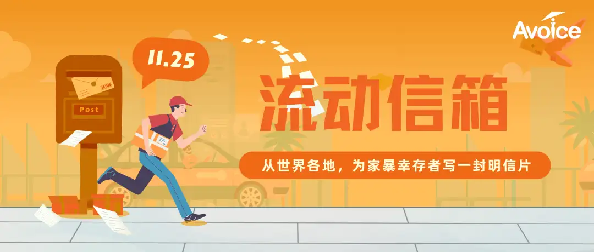
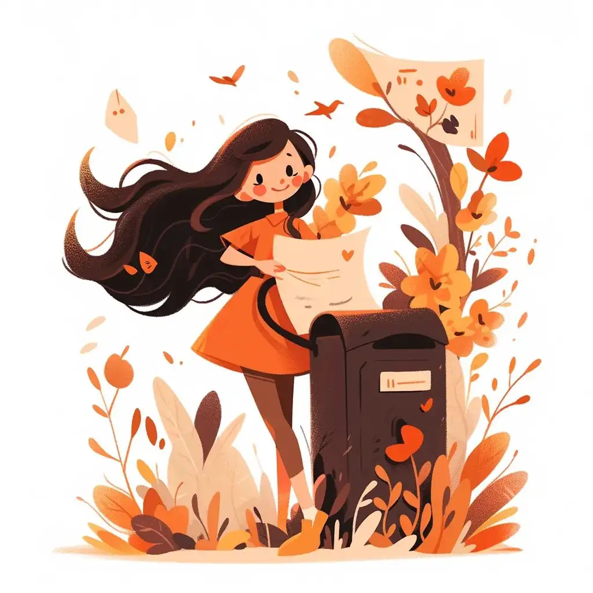
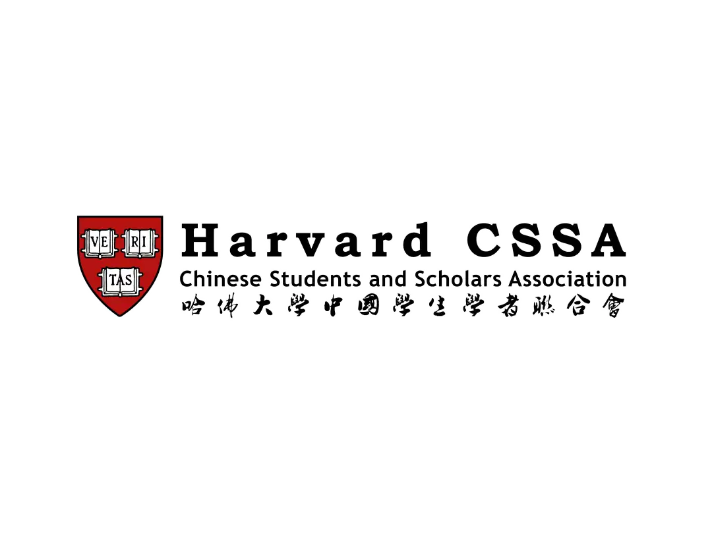

从世界各地
为家暴幸存者写一封明信片
11月25日是联合国“制止暴力侵害妇女行为国际日”，消除性别暴力“16日行动”从每年的这一天开始，一直持续到12月10日结束。“16日行动”旨在鼓励全世界的人们积极采取行动，消除性别暴力。
今天，针对妇女和女童的暴力仍然是世界上最普遍的人权侵犯行为之一。根据联合国统计，在全球范围内，约有7.36亿妇女（几乎是全体妇女的三分之一）一生中至少遭受过一次针对性别的暴力，包括在工作场所和网络空间发生的暴力。
AWDPI亚裔女性国际发展计划将在 “16日行动”期间再次开启“流动信箱”，大家可以通过以下两种方式表达对性别暴力幸存者的支持：
# Hear Her, Heal Her #

手写一张卡片，给遭受家暴和其它性别暴力的女性送去鼓励、关怀和支持，让爱与勇气在笔尖传递。请将卡片拍照在小红书、微博、Instagram等社交平台发，加上“#stopgenderviolence、#hearherhealher、#爱无暴力”等标签，并@我们的账号。账号名称如下：
小红书、微博
@海外华人女性保护
@avoice_womenaid
也可以将卡片的照片直接私信发送至公众号，或者以【流动信箱】为题投递至我们的邮箱：
如使用中文和英文之外的语种书写，请在投递时注明语言。
注意事项：
1. 支持她人也要保护自己，请勿在来信中透露个人信息；
2. 请勿使用包含人身攻击等非包容性言论的表达；
3. 所投递内容即视为授权AWDPI亚裔女性国际发展计划可使用此作品进行公益宣传与推广，原作者享有署名权。若提交时未署称呼，我们会默认署名为“匿名”。
# Hear You, Heal You #
有些时候，你在生活中遭遇性别暴力，想找人倾诉却不敢开口？
有些时候，你对于性别暴力议题感到困惑，却找不到人讨论？
或许，你可以走进这个温暖安全的匿名树洞，将心事投入树洞，我们会在这里，倾听、理解和帮助你。
参与方式:
参与时间：2023年11月25日至12月10日
参与形式：将电子邮件发送至
邮件标题格式：树洞来信+你的称呼
我们会像朋友一样倾听你的故事，并给予力所能及的帮助，但本活动不是专业心理咨询或长期笔友活动，因此，收到你的来信后，我们会在14天内择信回复。
你的烦恼也可能是其她女性的烦恼，因此，我们会将部分精选来信&回信内容发布在公众号，以鼓舞帮助更多人。 如果你不希望来信&回信内容被公开发布，或希望信件中的部分敏感内容在公开时被隐去，请在来信开头注明具体要求。若无标注，我们将默认除个人基础信息外的内容可以被公开。
#活动联合伙伴

撰文 I AWDPI项目设计处
排版&封面 I 杜婉婷